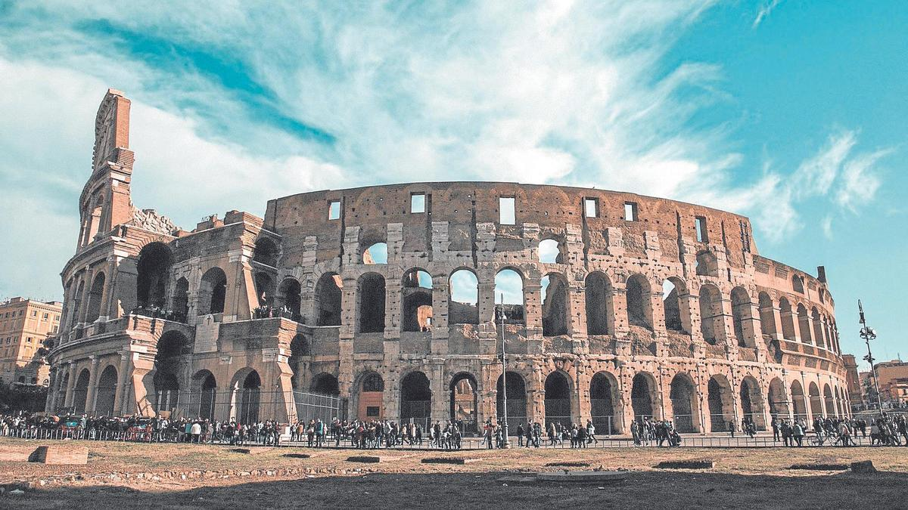
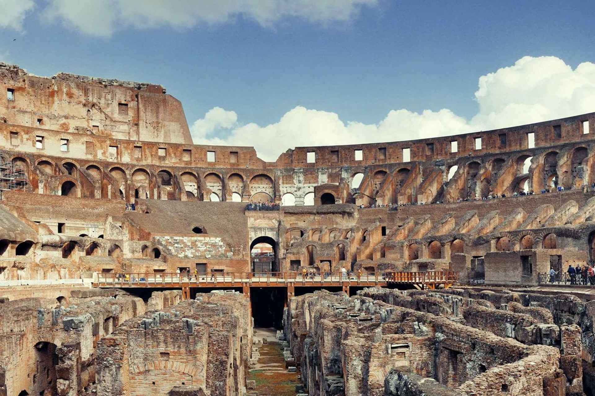
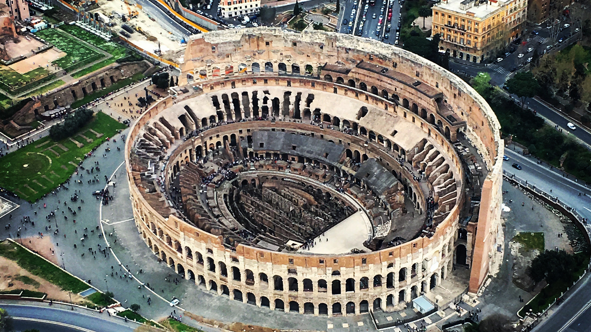

El Coliseo Romano
En la Antigüedad: El Gran Anfiteatro Flavio
Inaugurado en el año 80 d.C. bajo el mandato del emperador Tito, este coloso de la ingeniería civil nació oficialmente con el nombre de Anfiteatro Flavio. El apelativo de "Coliseo" se popularizó mucho después, inspirado en una estatua colosal del emperador Nerón que se alzaba en las inmediaciones del recinto. Durante más de cuatro siglos, esta imponente estructura de hormigón, ladrillo y piedra caliza funcionó como el centro de entretenimiento más extremo del mundo antiguo, reflejando tanto la grandeza técnica como la crueldad de la sociedad romana.
El edificio tenía una capacidad asombrosa, permitiendo albergar a más de cincuenta mil espectadores que se distribuían de forma estricta según su rango social, donde los senadores ocupaban las primeras filas y las clases más desfavorecidas se ubicaban en las zonas más altas. En la arena no solo se disputaban los famosos combates de gladiadores, sino que también se organizaban ejecuciones públicas y complejas cacerías de animales exóticos traídos de los confines del imperio. Todo esto era posible gracias al hipogeo, un sofisticado sistema subterráneo de túneles, jaulas y montacargas manuales que permitía hacer aparecer a las fieras y a los combatientes por sorpresa a través de trampillas secretas, logrando un espectáculo dinámico e impactante.
En la Actualidad: Icono Global y Ruina Viva
Hoy en día, casi dos milenios después de su construcción, el Coliseo sigue dominando el paisaje del centro de la Roma moderna, aunque su fisonomía actual cuenta la historia de su larga supervivencia. El característico perfil incompleto y el gran "bocado" que le falta a su fachada exterior no se deben únicamente a los terremotos que azotaron la región. Durante la Edad Media y el Renacimiento, el monumento fue utilizado activamente como una cantera pública, de donde papas y nobles locales extrajeron toneladas de mármol y piedra travertino para levantar palacios, iglesias y monumentos por toda la ciudad, incluyendo la propia Basílica de San Pedro.
A pesar de las heridas del tiempo, su valor cultural e histórico permanece intacto. Declarado Patrimonio de la Humanidad por la UNESCO en 1980 y elegido como una de las Nuevas Siete Maravillas del Mundo Moderno en 2007, el Coliseo se consagra como uno de los monumentos más visitados y fotografiados del planeta. Actualmente, los millones de viajeros que lo recorren cada año pueden caminar por las antiguas gradas, observar la arena parcialmente reconstruida e incluso descender a las entrañas del hipogeo, explorando aquellos pasillos subterráneos que durante siglos permanecieron ocultos a la vista del público.
Para adentrarnos más profundamente, te mostramos distintos parámetros


